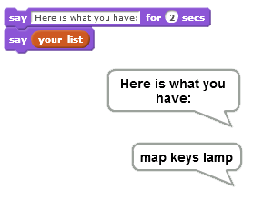

Adiciona o item especificado ao final da lista
O item pode ser um número ou uma cadeia de letras ou outros caracteres.

Utilize este bloco se você quiser adicionar um item ao final de uma lista. 
Não foi possível encontrar os blocos de lista? Primeiro você precisa fazer uma lista: